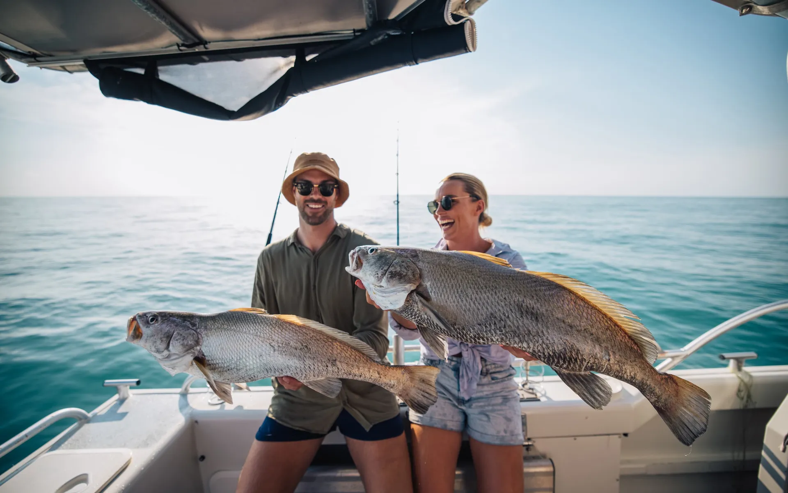
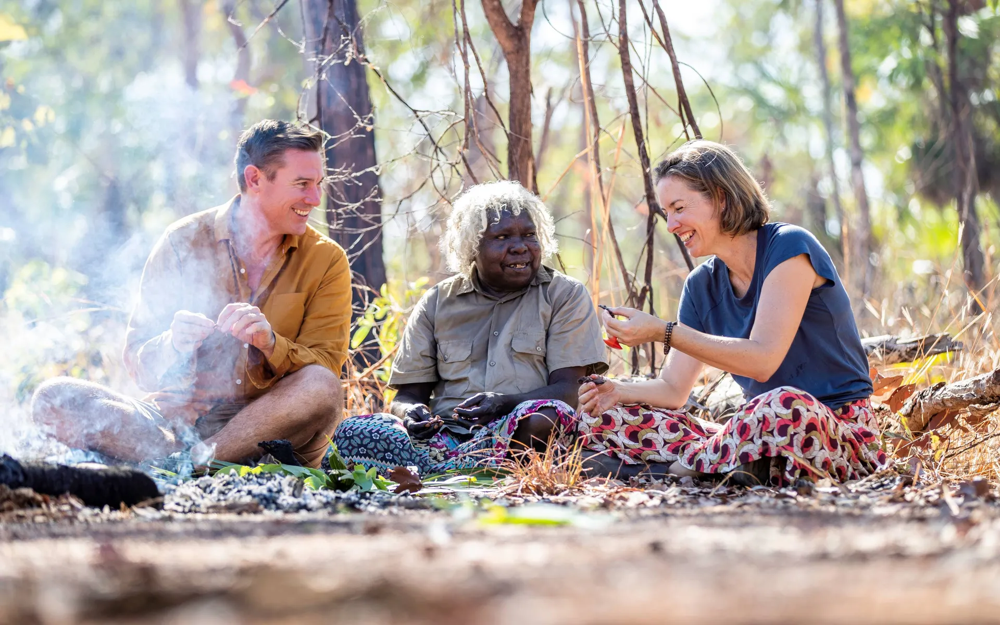

Featured Activities

Fishing
Explore the NT’s unrivalled fishing through huge tidal rivers, scenic inland billabongs, mangrove-lined estuaries and picturesque, blue coastlines.
Read More
Festivals & Event
When you come to an event in the NT, you get a whole lot of different. Stay longer on a trip to the NT to discover the ancient andscapes of Kakadu or Uluru-Kata Tjuta National Park;
Read More

Aborginal Cultural Experience
Culture is closer than you think in the Northern Territory. Immerse yourself in the stories, artworks and ancient traditions spanning more than 60,000 years.
Read More